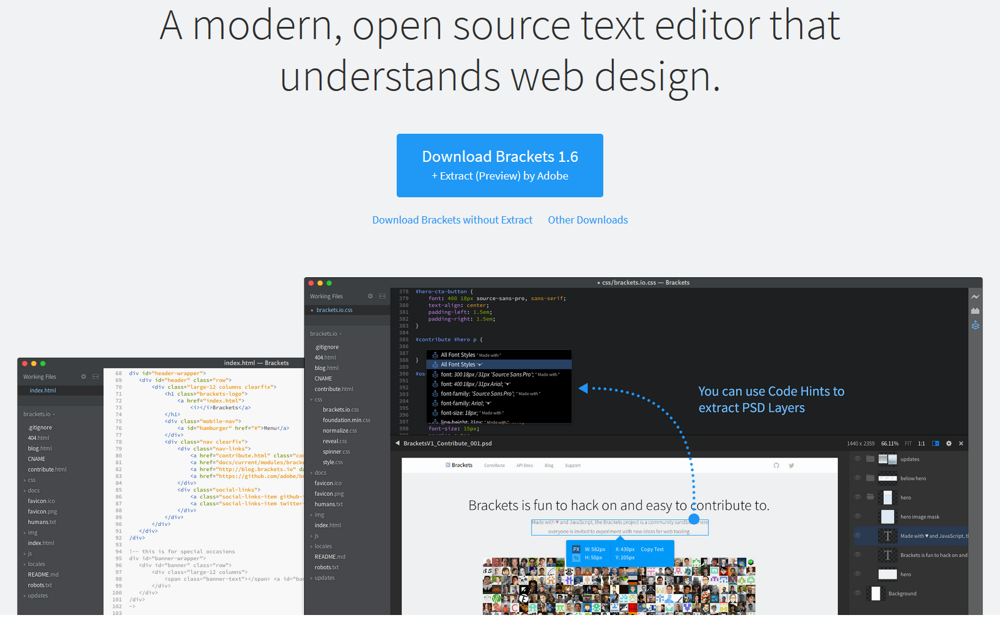

- HTML Basics
- Configuring Color and Text with CSS
- Visual Elements and Graphics
- Web Design
- Page Layout
- More on Links, Layout, and Mobile
- Tables
- Forms
- Web Development
- Web Multimedia and Interactivity
- Web Development
- E-Commerce Overview
- Web Promotion
- A Brief Look at JavaScriptCSE102 Introduction to Web Design and Programming
Vladimir Skvortsov
Objectives
This course aims to teach some key fundamentals of designing, developing, publishing of basic websites using real-world templates and examples.
Course Objectives:
To develop an understanding of the basics of web development and the management of simple websites. The technologies you will learn are HTML, HTML5, and CSS (Cascading Style Sheets) of version 3. The HTML5 is the newest version of the of the language
To learn about web design standards and why they’re important
To gain the skills and project-based experience needed for entry into web design, development and programming
Structure
Two weekly sessions (each 75 minutes)
1st session: lecture, practical exposition, discussion
2nd session: lecture, practical
Textbooks
Web Development and Design Foundations with HTML5, 7th Edition (ISBN-13: 978-0133571783)
Estelle Weyl, Louis Lazaris, and Alexis Goldstein. 2015. Html5 & Css3 for the Real World (2nd ed.). Sitepoint. (ISBN-13: 978-0987467492)
Wireframing:
THE GUIDE TO WIREFRAMING. For Designers, PMs, Engineers and Anyone Who Touches Product. UXpin. 2014. Available at: https://www.uxpin.com/studio/ebooks/guide-to-wireframing/
Content
Assignments
Midterm Exam 1 - This will be a written test.
Midterm Exam 2 - This will be a written test.
Semester Project: the project consists of up to 6 Homework Assignments plus the Final Presentation of the created site at the end of the semester - for these assignments the web pages will be designed and developed by students in various ways using different technologies.
Exams/Assignments schedule: TBA
Grading
Course grades will be based on a combination of:
M1 - 1st midterm exam (30%)
M2 - 2nd midterm exam (30%)
TP - Term project (consists of six homework assignments and presentation, 5% each) (35%)
AT - Attendance (5%)
Grading
Each assignment contributes points to a student’s final grade (there are 100 points total). The total # of points earned at the end of the semester will determine the student’s final letter grade, based on the thresholds below:
F | D | D+ | C- | C |
0-59 | 60-65 | 66-70 | 71-73 | 74-77 |
C+ | B- | B | B+ | A- | A |
78-80 | 81-83 | 84-87 | 88-90 | 91-93 | 94+ |
Example: 90.94 points would award you a B+ grade but 90.95 rounds to 91 and would award you an A- grade.
Grading
Course grades will be based on a combination of:
Tools
Brackets → http://brackets.io/

Tools (2)
|
|
|